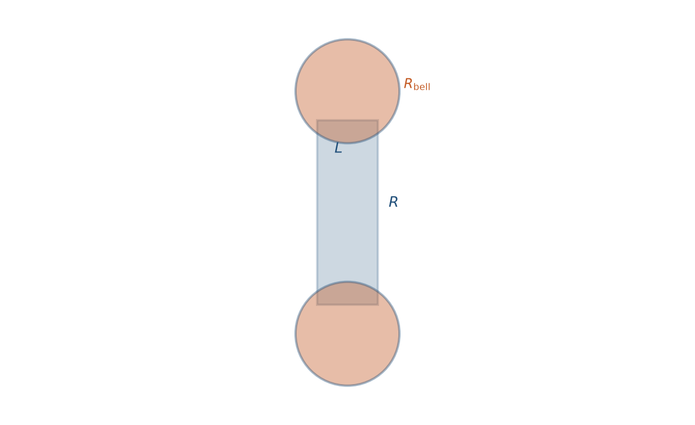
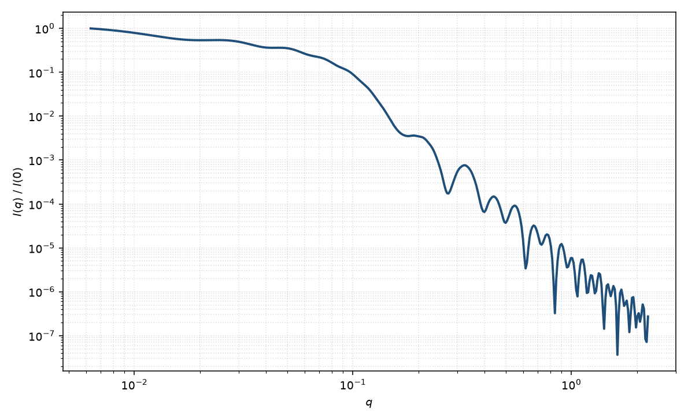

哑铃
barbell
适用场景
哑铃（barbell）是圆柱中段加上两端半径更大的球状端帽：$R_{\mathrm{bell}}\ge R$。适用于棒状胶束末端膨胀、哑铃状纳米颗粒、以及两端比中段更“圆”的短棒。当端帽半径等于圆柱半径且球心落在端面内时，退化为端帽圆柱（半球帽）。
相对平端圆柱，低 $q$ 的有效 $R_g$ 更大，中等 $q$ 出现端帽与中段的干涉调制。两端球心在圆柱外时，几何是真正的哑铃而不是胶囊。
物理图像
Kaya 给出圆柱加球形端帽的散射振幅：中段圆柱贡献与两端球（或球缺）贡献相加，再对取向平均。端帽半径大于中段时，球心在圆柱延长线之外，中间有一段“颈”。该式同时覆盖哑铃、哑铃极限下的双球、以及半球帽圆柱等若干几何。
干涉项对两端间距 $L+2h$ 敏感，$h$ 由 $R$ 与 $R_{\mathrm{bell}}$ 的几何约束决定，不能当作第三个自由长度随便放。
示意图


核心公式
取向 $\alpha$ 下振幅为中段圆柱与两端球缺之和（Kaya）
$$A(q,\alpha)=A_{\mathrm{cyl}}(q,R,L,\alpha)+A_{\mathrm{bell}}(q,R_{\mathrm{bell}},h,\alpha),$$ $$P(q)=\int_0^{\pi/2}|A(q,\alpha)|^2\sin\alpha\,\mathrm{d}\alpha\Big/\int_0^{\pi/2}|A(0,\alpha)|^2\sin\alpha\,\mathrm{d}\alpha.$$几何约束 $R_{\mathrm{bell}}\ge R$，球心到端面的距离 $h=\sqrt{R_{\mathrm{bell}}^2-R^2}$。$L\to 0$ 且两球相切时接近哑铃双球。
参数表
| 参数 | 符号 | 含义 | 单位 | 典型范围 |
|---|---|---|---|---|
| 中段半径 | $R$ | 圆柱颈半径 | Å 或 nm | 5–200 Å |
| 中段长度 | $L$ | 圆柱部分长度 | Å 或 nm | 10–2000 Å |
| 端帽半径 | $R_{\mathrm{bell}}$ | 端部球半径，$\ge R$ | Å 或 nm | 不小于 $R$ |
| 取向角 | $\theta,\phi$ | 轴相对光束（二维） | 度 | 由取向分布约束 |
| 衬度 | $\Delta\rho$ | 整体相对溶剂的 SLD 差 | Å$^{-2}$ | 均匀物体假设 |
| 标度 / 本底 | $\mathrm{scale}$, $B$ | 前置因子与本底 | 与强度单位一致 | 实验相关 |
拟合注意
$R$、$R_{\mathrm{bell}}$ 与 $L$ 三联相关：端帽变大与中段变短可给出相近 $R_g$。需要中等 $q$ 的干涉结构，或电镜约束端帽比。
多分散优先加在 $R$ 或 $L$ 之一；同时放端帽半径分布几乎不可辨识。取向同圆柱：一维粉末平均，二维用 $\theta,\phi$。
磁性：若只有端帽（或只有中段）带磁矩，磁振幅的几何与核通道不同，须分通道给磁 SLD，不能共用一个 $\Delta\rho$。
相近模型
参考文献
- Kaya, H. Scattering from cylinders with globular end-caps. J. Appl. Cryst. 2004, 37, 223–230. DOI: 10.1107/S0021889804000020
- Kaya, H.; de Souza, N.-R. Scattering from capped cylinders. Addendum. J. Appl. Cryst. 2004, 37, 508–509. DOI: 10.1107/S0021889804005709